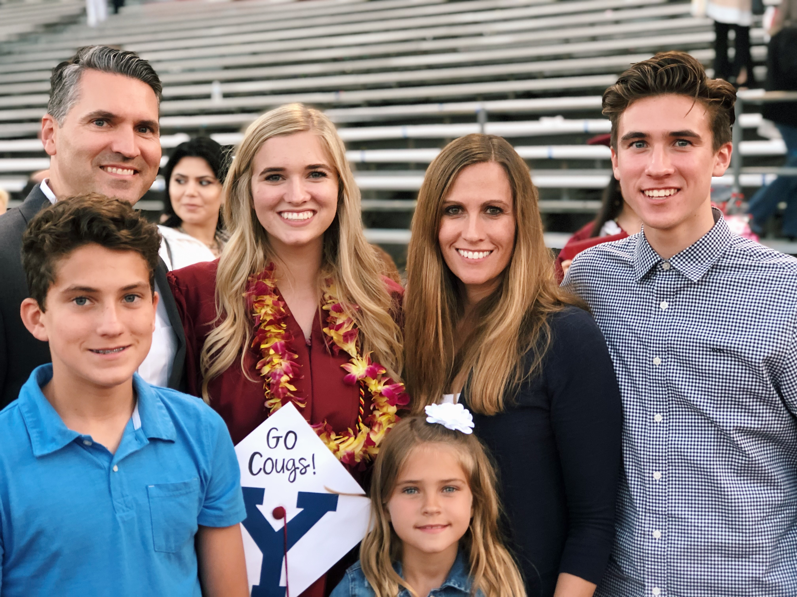

Education
- Palm Crest Elementary School
- La Canada High School
- Brigham Young University
As a child, I studied the basics at Palm Crest Elementary. I was given a great foundation in all subjects, and I learned how to conduct myself in a professional and respectful way.
While in high school, I attended La Canada High School in Los Angeles. There, I continued to recieve a well-rounded education in all subject (ie. math, science, english, history, the arts) I look back on my days in high school with fondness.
I now study at Brigham Young University. I have not chosen a major, but I am enjoying taking General Education classes. I am still figuring out what I want to do with my life and career, but I love studying at BYU.